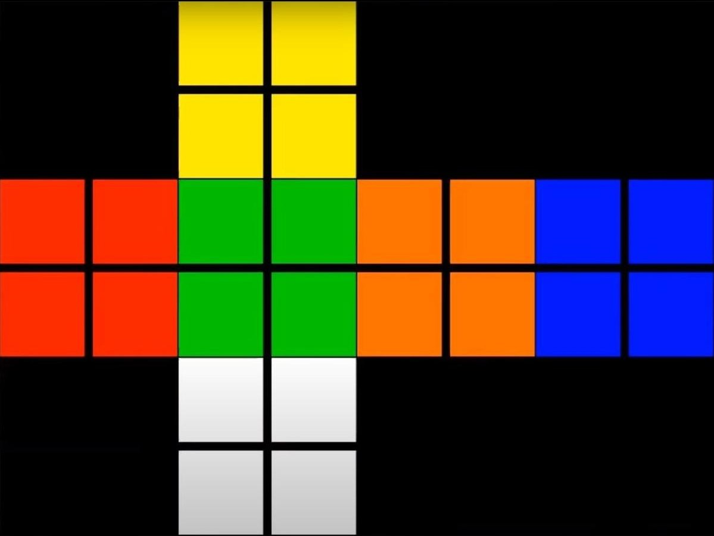

2x2 Rubik's Cube Solver
This was my final project that I did for my Data Structures and Algorithms class. We got to pick our own projects as long as they involved experimentally optimizing some aspect of the project. I decided to revisit my old Rubik's Cube Solving Robot project as the program I wrote for that was done earlier in the year when I had less knowledge of data structures and algorithms.
For my project, I wanted to focus on optimizing the overall runtime of the program and figure out which algorithm would lend itself most easily to this goal. To have a baseline to compare against, the first "algorithm" I wrote was fully random. It, quite simply, just made random moves until the cube was solved. The second algorithm I wrote was a backtracking algorithm and the third was a pretty standard Breadth First Search. The fourth one I wrote was a Double-Ended BFS algorithm that essentially had 2 simultaneous BFS algorithms starting at the scrambled and solved states and working towards each other until they connected.